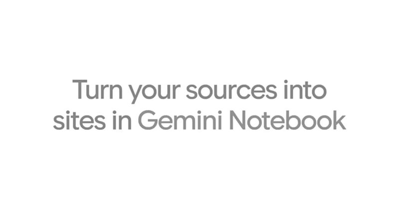
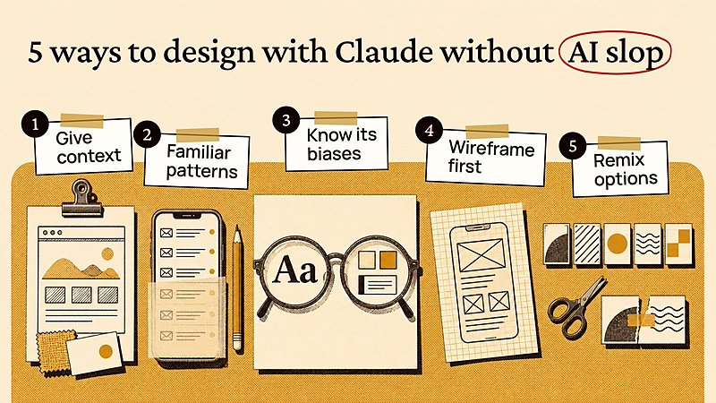

AI 日报 · 11月18日
代理协作走向可控数据与开放接口
Gemini 更新聊天历史与训练控制；Builder 讨论设计上下文、代理工作区与开放接口，GitHub 热榜出现编码代理交付和研究写作工具。
数据控制
代理协作
开放接口
开源工具
5
Builder 动态
3
上榜仓库
2
官方更新
今日要点
Google 宣布 Gemini 将允许用户保留聊天历史，同时选择不将其用于生成式 AI 模型训练；设置将在未来数周逐步推出。
OpenAI API 更新日志称，获批组织可以免费使用新的图像分类器辅助人工审查，并分别返回潜在儿童性虐待材料与 AI 生成内容的信号。
RSS 精选
行业周边观察
AI前线关注 AMD 与 AI 计算布局
AI前线 11 月 17 日刊讨论 AMD 的 AI 产业布局。涉及交易金额和具体进展，应以企业原始公告为准。
已检查 feeds.json 中四个 RSS；目前没有 11 月 18 日的新条目。
Builder 动态
从界面设计到代理工作区
Josh Woodward｜NotebookLM 生成互动网站
Google 的 Josh Woodward 展示把资料变成可分享的互动网站，并以元素周期表名称为示例；这是个人演示。

Peter Yang｜先给 AI 设计提供真实上下文
Peter Yang 总结 Nate Parrott 的设计建议：提供现有界面和参考产品，研究熟悉的交互模式，并先画线框稿。

GitHub Trending
代理交付、论文写作与前端协议
11 月 18 日 GitHub Trending 快照；星标和 Fork 数来自同期 GitHub API。
今日思考
让代理的协作边界具体可见
从 Gemini 的数据控制，到 Builder 对开放 SDK、评测和共同工作区的讨论，关键问题是明确数据如何进入代理、结果怎样被人检查。
今天可做
选一个代理任务，记录输入数据、可执行动作、审批点和评测结果，再与团队一起复盘。
参考来源